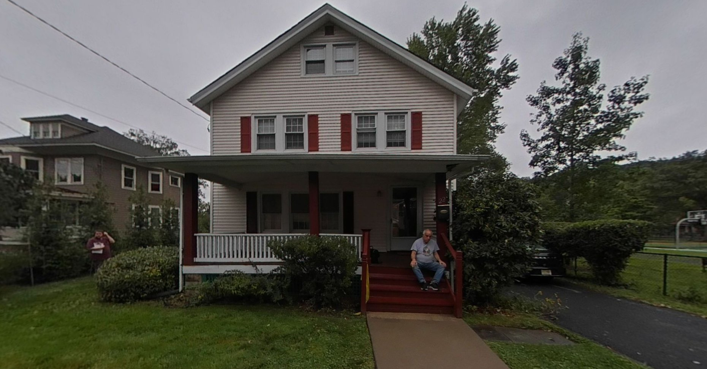
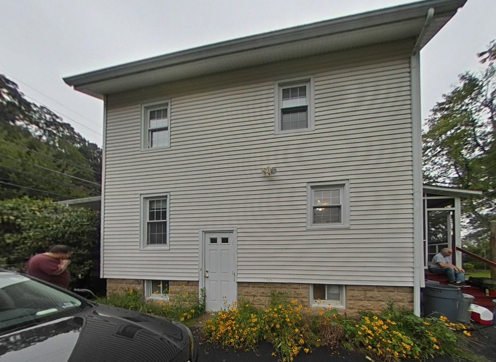
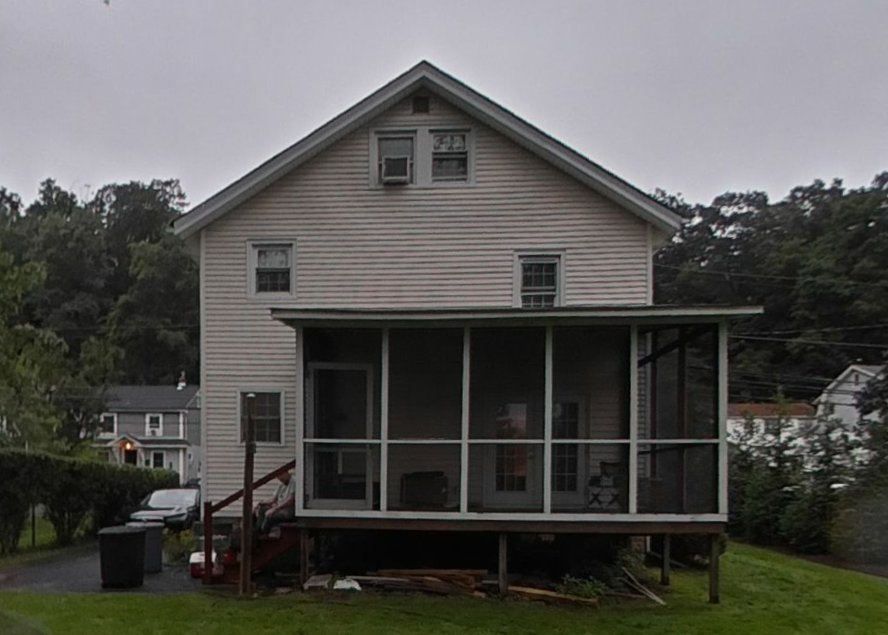
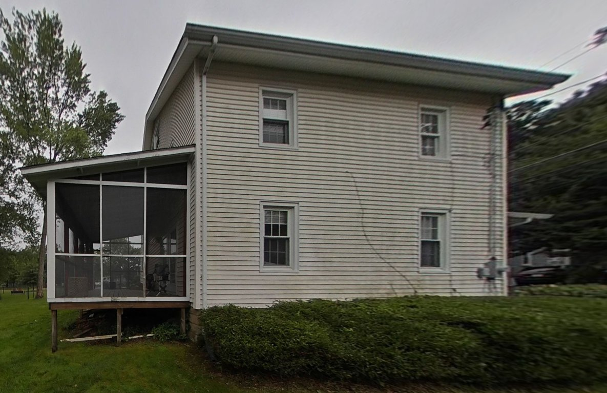

OUR NEXT CHAPTER
Budd Street
/ Home in 3D
Future state
Reference photos
3D graphics could not start. Please try a browser with WebGL enabled. Your reference photos are still available.
Front · driveway side
Current model · photo-based exterior study
Configure
▶ Start walk-around
Step inside
Reset view
360° exterior tour
← Back outside
Rooms
Design
Click an arrow to step forward · drag to look around
FRONT
↻
THE ORIGINAL REFERENCES
Four sides of home
Close

Front

Driveway side

Rear

Left side